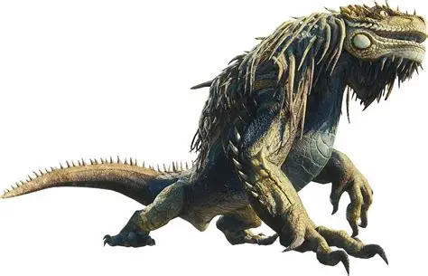
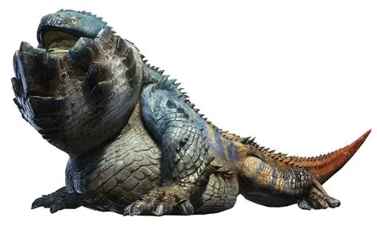
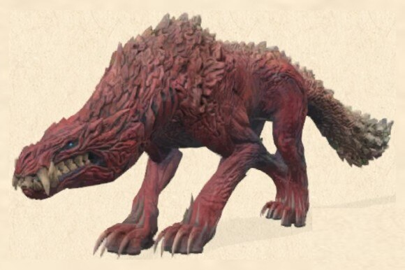
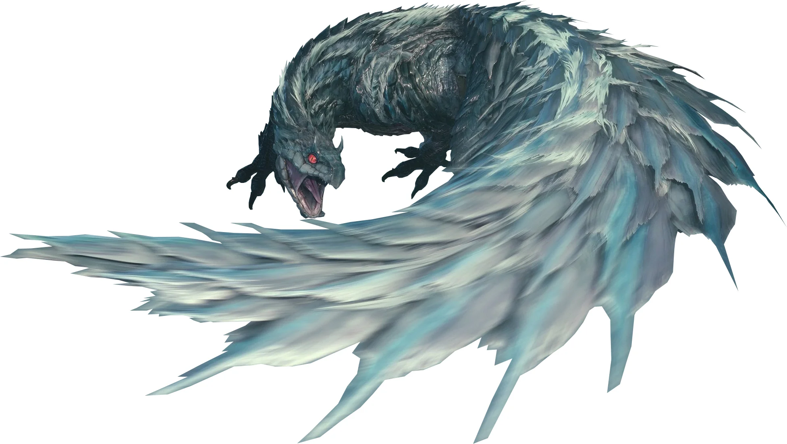
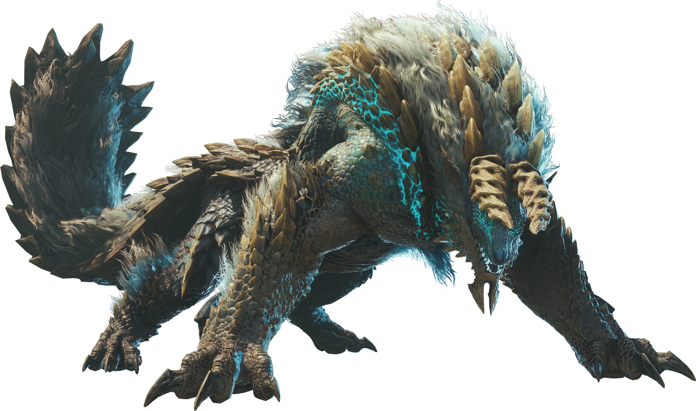
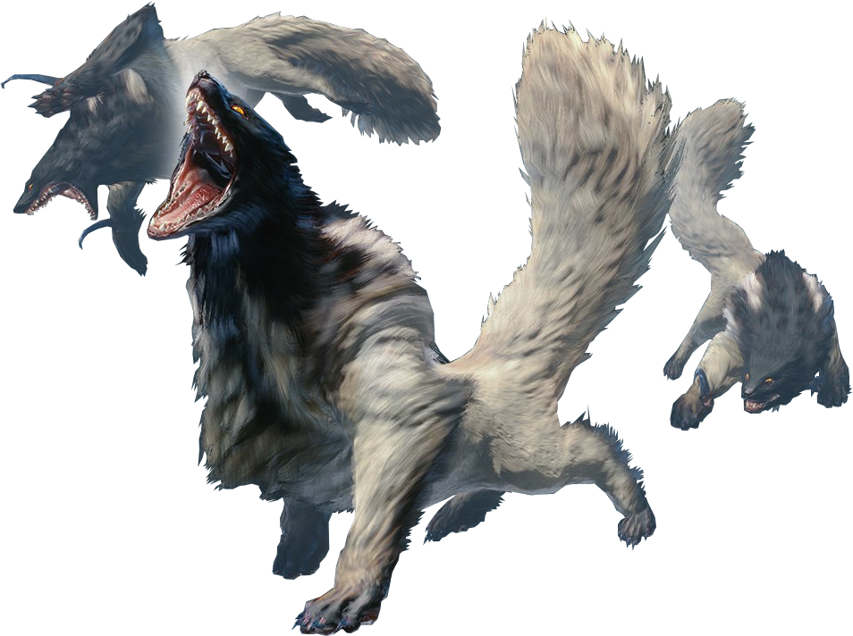
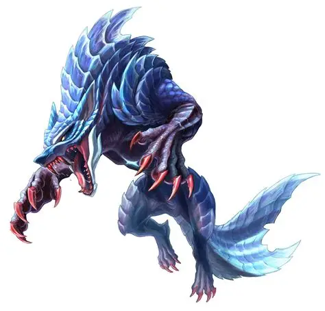
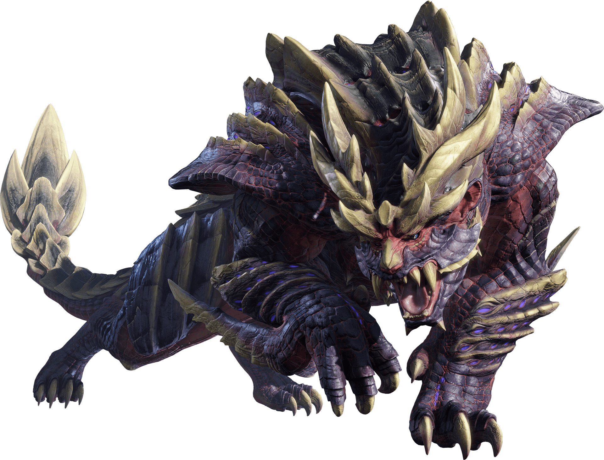

Gran-Jagras
Titulo: Wyvern-Ladron
Débilidad: fuego, Agua y hielo
Tamaño Max y min: 1590,993cm max. - 976,600cm. min

Gran-Girros
Titulo: Ladron-Paralizante
Débilidad: fuego, rayo y hielo
Tamaño Max y min: Mediano

Dodogama
Titulo: Ladron-De-Rocas
Débilidad: Agua, rayo y hielo
Tamaño Max y min: 2000,00 cm max - 977,78 cm min

odogaron
Titulo: Wyvern-garras-cruel
Débilidad: rayo y hielo
Tamaño Max y min: 1735,94 cm Max - 541,61 cm min

Toby-kadashi
Titulo: Wyvern-trueno-Volador
Débilidad: Agua, fuego y hielo
Tamaño Max y min: Mediano

Zinogre
Titulo: Wyvern-lobo-de-Trueno/ Señor del rayo
Débilidad: hielo
Tamaño Max y min: 2063,16 cm. cm Max - 1329,30 cm min

Wulgs
Titulo: ninguno
Débilidad: cualquien daño fisico o elemental
Tamaño Max y min: pequeños

Lunagaron
Titulo: Wyvern-Lobo-de-Hielo/ luz nocturna
Débilidad: Fuego y rayo
Tamaño Max y min: 1739.5 cm. cm Max - 1272.8 cm min

Magnamalo
Titulo: Wyvern-trigre-malicioso/ bestia barbarica
Débilidad: Agua y rayo
Tamaño Max y min: 1602.38 cm Max - 2276.11 cm min